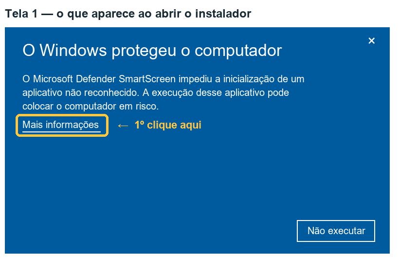
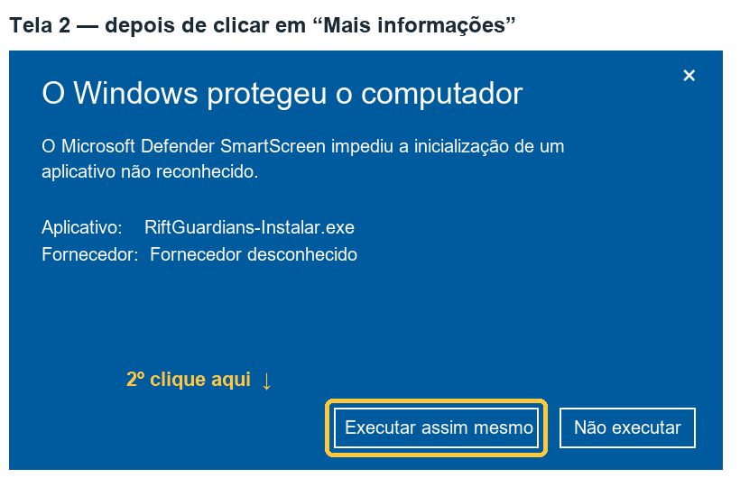

The Windows warning when you open the game
Summary
Windows shows a warning the first time you open the installer (or the game) because Rift Guardians is a free game made by one person and has no digital signature, which is a service paid for every year. The warning does not say there is a virus: it says Windows does not know this file yet.
To continue: click More info and then Run anyway.
If you would rather not just take our word for it, you can verify the file's SHA-256 code or install through the itch.io app.
Step by step


The images above are illustrative drawings with Portuguese labels, not screenshots. We will replace them with real photos after testing on computers with a freshly installed Windows. The wording may vary a little with your Windows version and language.
Before that, your browser may also warn that "this file is not commonly downloaded". If that happens, choose Keep (the wording depends on the browser).
Why the warning appears
- The Windows filter (Microsoft Defender SmartScreen) trusts programs by history: a new file that few people have opened is shown as "unrecognized".
- A signed program carries its publisher's name and builds that history from one version to the next. The signature is a paid certificate, renewed every year. Rift Guardians is free and has no revenue, so today we do not have that certificate.
- Without a signature, each new version is a new file to Windows. The warning comes back when you update.
- "Unknown publisher" means exactly that: the file has no signature. It is not the result of an analysis of its contents.
The warning exists for a good reason and we are not asking you to ignore it blindly. Download the game only from the addresses on the Download page and, if you want to be sure, verify the file.
How to verify the file (SHA-256)
SHA-256 is a code calculated from the file. If a single byte changes, the code changes. We publish the code of each file on the Download page.
- Open the folder where the file was downloaded (usually Downloads).
- Right-click an empty area of the folder and choose Open in Terminal (on Windows 10: hold Shift, right-click and choose Open PowerShell window here).
- Type the command shown just below, changing the name if your file is a different one, and press Enter.
- Compare the code shown in the Hash column with the one on the Download page. Upper and lower case do not matter.
Get-FileHash .\RiftGuardians-0.9.0-setup.exe -Algorithm SHA256If the code is the same, the file is exactly what we published. If it is different, do not open it: delete it, download it again from the official link and, if it is still different, contact us.
Installing through the itch.io app
The itch.io app is itch.io's own program for downloading, installing and updating games. You install the app once, find Rift Guardians in it and click install.
We have not yet measured whether the Windows warning stops appearing for people who install this way. Once we have tested it, this page will say what we found.
There is no button to continue
On computers running Windows 11 with Smart App Control turned on, Windows may block the game without offering the "Run anyway" button. This feature blocks unsigned programs that are not yet well known.
Only you can decide what to do with your computer's protections. The feature is under Windows Security → App & browser control → Smart App Control. On some Windows versions, once turned off it cannot be turned back on without reinstalling the system — read the explanation Windows itself shows before changing anything. If you do not want to change it, don't: we hope to be able to sign the game in the future.
If your antivirus complains
Unsigned games made with Unity are sometimes flagged by mistake.
- Do not turn off your antivirus. We will never ask you to.
- Verify the SHA-256 of the file you downloaded.
- Try the portable version (.zip) from the Download page: it usually triggers fewer false alarms than the installer.
- Let us know which antivirus, which message and which game version. With that we can send the file to the antivirus vendor as a false detection.
The honest summary
- The blue warning will appear for everyone as long as the game has no digital signature.
- It comes back with every new version.
- You are not obliged to continue. If in doubt, do not install, and ask at support.